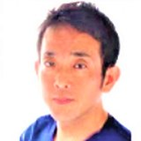

K2 非常勤役員
橋爪英城 先生

K2 非常勤役員
- 職種
- 歯科医師
- 所属
- TEAM東京 橋爪エンドドンティクス デンタルオフィス（院長） ↗
- 地域
- 東京都中央区八重洲（JR 東京駅）
根管治療（歯内療法）の専門医院を開く歯科保存治療専門医。日本大学松戸歯学部の歯内療法教室で研究・診療に携わり、米国留学を経て、マイクロスコープを用いた精密根管治療に取り組む。
ハンズオンコース講師：根管治療
経歴CAREER
- 1989日本大学松戸歯学部 卒業
- 1993日本大学大学院 松戸歯学研究科 修了、博士（歯学）
- 1993日本大学 助手
- 1996日本大学 海外派遣研究員として米国 Thomas Jefferson University（フィラデルフィア）、Roche Bioscience（パロアルト）に在籍
- 1999日本歯科保存学会 歯科保存治療専門医 認定
- 2001日本大学松戸歯学部 講師（専任扱）
- 2007日本大学松戸歯学部 専任講師
- 2010日本大学松戸歯学部 兼任講師／ホワイトデンタルグループ葛飾院 院長／Nobu Dental Office 根管治療専門医として勤務
- 2012TEAM東京 橋爪エンドドンティクス デンタルオフィス 開設
- 2017AAE（米国歯内療法学会）インターナショナルメンバー
- 2018医療法人社団天城会 設立、理事長
- 2026日本歯科専門医機構 歯科保存専門医 認定
役職・所属学会AFFILIATIONS
役職
- K2 非常勤役員
- 医療法人社団天城会 理事長
所属学会
- 日本歯科保存学会（歯科保存治療専門医・歯科保存上級医）
- 日本歯科専門医機構 認定 歯科保存専門医
- AAE 米国歯内療法学会（インターナショナルスペシャリストメンバー）
著書・講演・受賞などACTIVITIES
- 共著に『歯内療法の三種の神器 2025-2026』（デンタルダイヤモンド社）、『写真でマスターする エンドでマイクロスコープを活用するためのポジショニングとミラーテクニック』（ヒョーロン・パブリッシャーズ、2018年）、『天然歯審美修復のセオリー図解Q&A』（クインテッセンス出版、2017年、CHAPTER 4 執筆）、『ルーペとマイクロスコープを上手に活用しよう』（ヒョーロン・パブリッシャーズ）。
- 論文に「WaveOne Gold 10年の歳月と臨床」（日本歯科評論 2025年11月号）。
- デンツプライシロナ公認インストラクター。歯科医師向けに根管治療の講演・ハンズオンを行い、2024年5月にはK2スタディーグループで「初期治療の失敗が招く難治性歯痛」を講演。
TEAM東京 橋爪エンドドンティクス デンタルオフィスについてCLINIC
根管治療を専門に行う自費診療の医院。CTとマイクロスコープを用いて1回1時間半〜2時間をかけて治療し、治療後は連携する修復専門の医院に引き継ぐ。
- 重度の歯周病や歯の破折がない限り、歯を抜かずに治療する方針
- ラバーダムの使用を必須とし、器具は欧州規格クラスBの高圧蒸気滅菌器で滅菌
- 個室・完全予約制で、一般歯科医院からの紹介患者を受け入れている
掲載情報の出典
経歴は所属先の公式サイトなど公開情報をもとに掲載しています。